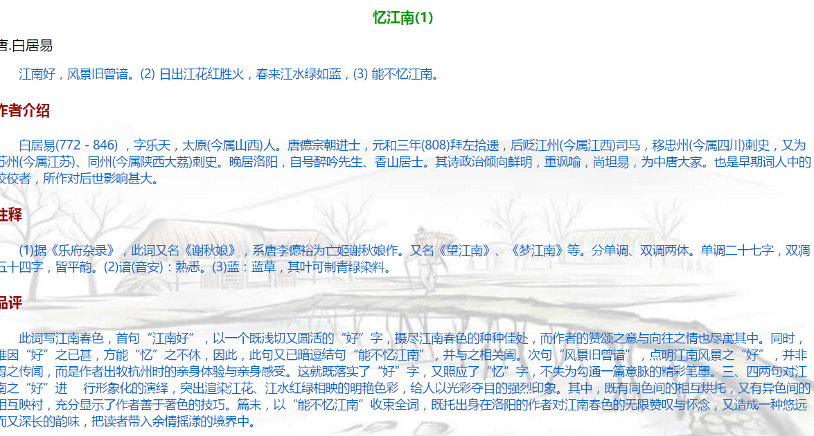

02 CSS基础
认识CSS¶
HTML定义内容的含义，为网页构建基本的结构，而CSS（Cascading Style Sheet，层叠样式表）则定义它们的外观。
样式表不过是一种文本文件，其中包含一个或多个（通过属性和值）决定网页某特定元素如何显示的规则。CSS里有控制基本格式（如字号和颜色）的属性，有控制布局（如定位和浮动）的属性，还有决定访问者打印时在哪里换页的打印控制元素。CSS还有很多控制项目显示或消失的动态属性，可以用于创建下拉列表和其他交互性组件。
概念：
CSS(Cascading Style Sheets) ，通常称为CSS样式表或层叠样式表（级联样式表）
作用：
-
主要用于**设置** HTML页面中的文本内容（字体、大小、对齐方式等）、图片的外形（宽高、边框样式、边距等）以及**版面的布局和外观显示样式。**
-
CSS以HTML为基础，提供了丰富的功能，如字体、颜色、背景的控制及整体排版等，而且还可以针对不同的浏览器设置不同的样式。
CSS层叠样式表¶
HTML的局限性¶
说起HTML，这其实是个非常单纯的家伙， 他只关注内容的语义，
比如 <h1> 表明这是一个大标题，用 <p> 表明这是一个段落，用 <img> 表明这儿有一个图片， 用 <a>表示此处有链接。
很早的时候，世界上的网站虽然很多，但是他们都有一个共同的特点： 丑。
原因有以下三点
- HTML满足不了设计者的需求
- 操作html属性不方便
- HTML里面添加样式带来的是无尽的臃肿和繁琐
CSS 网页的美容师¶
- 让我们的网页更加丰富多彩，布局更加灵活自如。
- CSS的最大贡献就是： 让 HTML 从样式中脱离， 实现了 HTML 专注去做 结构呈现，样式交给css
我们理想中的结果： 结构(html)与样式(css)相分离 这句话要记住
而且。。。。。 CSS 做的很出色，如果JavaScript是网页的魔法师，那么CSS它是我们网页的美容师，不信，你看:

CSS构造块¶
样式表中的每条规则都有两个主要部分：选择器 （selector）和 声明块 （declaration block）。选择器决定哪些元素受到影响；声明块由一个或多个属性/值对（每个属性/值对构成一条声明）组成，它们指定应该做什么。
构造样式规则¶
样式规则由选择器（表示哪些元素将进行格式化）和声明块（描述要执行的格式化）组成。
声明块内的每条声明都是一个由冒号隔开、以分号结尾的属性/值对。
声明块以前花括号开始，以后花括号结束
声明的顺序并不重要，除非对相同的属性定义了两次。在这个例子中，color: red 也可以放在background: cyan 前面，效果是一样的。注意额外的空格和缩进（可选，但推荐包含）提高了可读性
构造样式规则的步骤
- 输入
selector，这里的selector表示希望进行格式化的元素。后面讲解如何创建各种类型的选择器。 - 输入
{（前花括号）开始声明块。 - 输入
property:value;，其中property是CSS属性的名称，描述要应用哪种格式；value是该属性允许的选项之一。 - 根据需要，重复第3步。通常一行输入一个
property: value（一条声明）。 - 输入
}，结束声明块和样式规则。
为样式规则添加注释¶
在CSS中添加注释是个好主意，这样就可以标注样式表的主要区域，或者只是对某条规则或声明的说明。注释不仅对你有用，对阅读代码的其他人也有好处。当你过几个月再看你写的代码时，会庆幸自己留下了这些注释。
为样式规则添加注释
- 在样式表中，输入
/*开始注释。 - 输入注释。
- 输入
*/结束注释。
提示 注释可以包含回车，因此可以跨越多行。
/*这是一段CSS注释。它可以只有一行，也可以 跨越多行。这个注释比大多数注释都长。CSS注 释不会同网站HTML内容一起显示在浏览器中。 下面一条注释更合乎注释的常规用法。 */
/*为旧的浏览器设置特定HTML5元素的默认呈现样式。*/
h1 {
color: red;
}
注释可长可短，但它们通常较短。可以根据你的想法，用它们描述样式规则或一组相关的规则的目的。注释做得好可以让样式表更易于维护
操作样式表文件¶
开始定义样式表之前，要知道如何创建和使用包含这些样式的文件。在本章中，你将学习如何创建样式表文件，如何将CSS应用到多个网页（包括整个网站）、单个页面或单独的HTML元素。这三种应用分别通过三种方法实现：外部样式表（首选方法）、嵌入样式表和内联样式（最不可取的方法）。
行内式（内联样式）¶
应当最后考虑这种方式，因为它将内容（HTML）和表现（CSS）混在了一起，严重地违背了最佳实践。内联样式只影响一个元素。设想要对大量HTML做简单的文字颜色的改变，就需要对这些页面逐一进行检查和修改，可见内联样式不被经常使用的原因。
不过，如果你想快速地测试某种样式，以便随后将它从HTML中搬到更易于长期维护的外部样式表中（假定你对结果满意），内联样式就能派上用场了。
- 概念：
称行内样式、行间样式.
是通过标签的style属性来设置元素的样式
- 其基本语法格式如下：
<标签名 style="属性1:属性值1; 属性2:属性值2; 属性3:属性值3;"> 内容 </标签名>
实际上任何HTML标签都拥有style属性，用来设置行内式。
- 案例：
<h1 style="color: cyan; font-size: 18px;">世纪佳缘，我也在这里等你思密达</h1>
- 注意：
- style其实就是标签的属性
- 样式属性和值中间是
: - 多组属性值之间用
;隔开。 - 只能控制当前的标签和以及嵌套在其中的字标签，造成代码冗余
- 缺点：
- 没有实现样式和结构相分离
内部样式表（内嵌样式表）¶
它允许在HTML文档里直接设置样式（通常位于head 部分）。由于这些样式只在一个网页里存在，因此不能像外部样式表中的规则那样应用到其他的页面，同时，缓存的好处也不存在了。如上文所述，对于大多数情况，外部样式表是推荐的方式，但理解其他的选择以备不时之需也是很重要的。
- 概念：
称内嵌式
是将CSS代码集中写在HTML文档的head头部标签中，并且用style标签定义
- 其基本语法格式如下：
<head>
<style type="text/CSS">
选择器（选择的标签） {
属性1: 属性值1;
属性2: 属性值2;
属性3: 属性值3;
}
</style>
</head>
<style>
div {
color: red;
font-size: 12px;
}
</style>
-
注意：
-
style标签一般位于head标签中，当然理论上他可以放在HTML文档的任何地方。
- type="text/css" 在html5中可以省略。
-
只能控制当前的页面
-
缺点：
没有彻底分离
综合案例
<style>
/*选择器{属性:值；}*/
p {
color:#06C;
font-size:14px;
} /*文字的颜色是 蓝色*/
h4 {
color:#900;
}
h1 {
color:#090;
font-size:16px;
}
body {
background:url(bg2.jpg);
}
</style>
思考：
1. 如何实现结构与样式完全分离？
2. 如何实现css样式共享？
外部样式表（外链式）¶
外部样式表非常适合给网站上的大多数页面或者所有页面设置一致的外观。可以在一个外部样式表中定义全部样式，然后让网站上的每个页面加载这个外部样式表，从而确保每个页面都有相同的设置。尽管后面你将学到嵌入样式表和内联样式表，但从外部样式表为页面添加样式才是最佳实践，推荐你使用这种方法（允许偶尔的例外）。
- 概念：
称链入式
是将所有的样式放在一个或多个以**.CSS**为扩展名的外部样式表文件中，
通过link标签将外部样式表文件链接到HTML文档中
- 其基本语法格式如下：
<head>
<link rel="stylesheet" type="text/css" href="css文件路径">
</head>
- 注意：
- link 是个单标签
- link标签需要放在head头部标签中，并且指定link标签的三个属性
| 属性 | 作用 |
|---|---|
| rel | 定义当前文档与被链接文档之间的关系，在这里需要指定为“stylesheet”，表示被链接的文档是一个样式表文件。 |
| type | 定义所链接文档的类型，在这里需要指定为“text/CSS”，表示链接的外部文件为CSS样式表。我们都可以省略 |
| href | 定义所链接外部样式表文件的URL，可以是相对路径，也可以是绝对路径。 |

三种样式表总结（位置）¶
| 样式表 | 优点 | 缺点 | 使用情况 | 控制范围 |
|---|---|---|---|---|
| 行内样式表 | 书写方便，权重高 | 没有实现样式和结构相分离 | 较少 | 控制一个标签（少） |
| 内部样式表 | 部分结构和样式相分离 | 没有彻底分离 | 较多 | 控制一个页面（中） |
| 外部样式表 | 完全实现结构和样式相分离 | 需要引入 | 最多，强烈推荐 | 控制整个站点（多） |
案例：

<h2>忆江南 唐.白居易</h2>
<p>
江南好,风景旧曾谙。<br />
日出江花红胜火，<br />
春来江水绿如蓝，<br />
能不忆江南。</p>
<h4>作者介绍</h4>
<p>白居易(772－846) ，字乐天,白居易(772－846) ，字乐天，
太原(今属山西)人。唐德宗朝进士，元和三年(808)拜左拾遗，后贬江州(今属江西)司马，移忠州(今属四川)刺史，又为苏州(今属江苏)、同州(今属陕西大荔)刺史。晚居洛阳，自号醉吟先生、香山居士。其诗政治倾向鲜明，重讽喻，尚坦易，为中唐大家。也是早期词人中的佼佼者，所作对后世影响甚大。
</p>
<h4>注释</h4>
<p>(1)据《乐府杂录》，此词又名《谢秋娘》，系唐李德裕为亡姬谢秋娘作。又名《望江南》、
《梦江南》等。分单调、双调两体。单调二十七字，双凋五十四字，皆平韵。(2)谙(音安)：熟悉。(3)蓝：蓝草，其叶可制青绿染料。</p>
<h4>品评</h4>
<p>此词写江南春色，首句“江南好”，以一个既浅切又圆活的“好”字，摄尽江南春色的种种佳处，而作者的赞颂之意与向往之情也尽寓其中。同时，唯因“好”之已甚，方能“忆”之不休，因此，此句又已暗逗结句“能不忆江南”，并与之相关阖。次句“风景旧曾谙”，点明江南风景之“好”，并非得之传闻，而是作者出牧杭州时的亲身体验与亲身感受。这就既落实了“好”字，又照应了“忆”字，不失为勾通一篇意脉的精彩笔墨。三、四两句对江南之“好”进 行形象化的演绎，突出渲染江花、江水红绿相映的明艳色彩，给人以光彩夺目的强烈印象。其中，既有同色间的相互烘托，又有异色间的相互映衬，充分显示了作者善于著色的技巧。篇末，以“能不忆江南”收束全词，既托出身在洛阳的作者对江南春色的无限赞叹与怀念，又造成一种悠远而又深长的韵味，把读者带入余情摇漾的境界中。</p>
代码风格
样式书写一般有两种：
- 一种是紧凑格式 (Compact)
h3 { color: deeppink;font-size: 20px;}
- 一种是展开格式（推荐）
h3 {
color: deeppink;
font-size: 20px;
}
代码大小写
样式选择器，属性名，属性值关键字全部使用小写字母书写，属性字符串允许使用大小写。
/* 推荐 */
h3{
color: pink;
}
/* 不推荐 */
H3{
COLOR: PINK;
}
总结CSS样式规则¶
使用HTML时，需要遵从一定的规范。CSS亦如此，要想熟练地使用CSS对网页进行修饰，首先需要了解CSS样式规则，
具体格式如下：

总结：
- 选择器用于指定CSS样式作用的HTML标签，花括号内是对该对象设置的具体样式。
- 属性和属性值以“键值对”的形式出现。
- 属性是对指定的对象设置的样式属性，例如字体大小、文本颜色等。
- 属性和属性值之间用英文“:”连接。
- 多个“键值对”之间用英文“;”进行区分。
CSS选择器（重点）¶
择器决定样式规则应用于哪些元素。例如，如果要对所有的p 元素添加Times字体、12像素高的格式，就需要创建一个只识别p 元素而不影响代码中其他元素的选择器。如果要对每个区域中的第一个p 设置特殊的缩进格式，就需要创建一个稍微复杂一些的选择器，它只识别作为页面中每个区域的第一个元素的p 元素。
选择器可以定义五个不同的标准来选择要进行格式化的元素。
- 元素的类型或名称（标签选择器）。
- 元素所在的上下文（子类选择器）。
- 元素的类或ID（类选择器、ID选择器）。
- 元素的伪类或伪元素（伪类选择器）。
- 元素是否有某些属性和值（属性选择器）。
为了指出目标元素，选择器可以使用这五个标准的任意组合。在大多数情况下，只使用一个或两个标准即可。另外，如果要对几组不同的元素应用相同的样式规则，可以将相同的声明同时应用于几个选择器。
css 就是 分两件事， 选对人， 做对事。
h3 {
color: red;
}
这段代码就是2件事， 把 h3选出来， 然后 把它变成了 红色。 以后我们都这么干。
选择器分为基础选择器和 复合选择器，我们这里先讲解一下 基础选择器。
CSS基础选择器¶
标签选择器¶
选择要格式化的元素，最常用的标准可能是元素的名称或类型。例如，可能要让所有的h1 元素以大字号、粗体显示，让所有的p 元素以无衬线字体显示
口诀：
标签选择器口诀：
<div>标签选择器，</div>
<div>页面同选起。</div>
<div>直接写标签，</div>
<div>全部不放弃。</div>
<span>标签选择器，</span>
<span>页面同选起。</span>
<span>直接写标签，</span>
<span>全部不放弃</span>
作用：
- 标签选择器 可以把某一类标签**全部**选择出来 比如所有的div标签 和 所有的 span标签
优点：
- 是能快速为页面中同类型的标签统一样式
缺点：
- 不能设计差异化样式。
思考： 如果想要差异化选择不同的标签，怎么办呢？ 就是说 我想单独选一个或者某几个标签呢？
类选择器¶
类选择器使用“.”（英文点号）进行标识，后面紧跟类名。
-
语法：
-
类名选择器
.类名 {
属性1:属性值1;
属性2:属性值2;
属性3:属性值3;
}
- 标签
<p class='类名'></p>
-
优点：
-
可以为元素对象定义单独或相同的样式。 可以选择一个或者多个标签
-
注意
-
类选择器使用“.”（英文点号）进行标识，后面紧跟类名(自定义，我们自己命名的)
- 长名称或词组可以使用中横线来为选择器命名。
- 不要纯数字、中文等命名， 尽量使用英文字母来表示。
命名规范： 见附件（Web前端开发规范手册.doc）
命名是我们通俗约定的，但是没有规定必须用这些常用的命名。
- 记忆口诀
差异化选择 一个或多个 上面点定义 类名别写错 谁用谁调用 class来做。
嘿嘿，工作类最多。
类选择器口诀：
<div>差异化选择，</div>
<div class="cyan">一个或多个。</div>
<div>上面点定义，</div>
<div>类名别写错。</div>
<div>谁用谁调用，</div>
<div>class来做。</div>
<div class="red">嘿嘿，工作类最多。</div>
课堂案例：
<head>
<meta charset="utf-8">
<style>
.blue {
color: blue;
font-size: 100px;
}
.red {
color: red;
font-size: 100px;
}
.orange {
color: orange;
font-size: 100px;
}
.green {
color: green;
font-size: 100px;
}
</style>
</head>
<body>
<span class="blue">G</span>
<span class="red">o</span>
<span class="orange">o</span>
<span class="blue">g</span>
<span class="green">l</span>
<span class="red">e</span>
</body>
id选择器¶
id选择器使用#进行标识，后面紧跟id名
其基本语法格式如下：
- id选择器
#id名 {属性1:属性值1; 属性2:属性值2; 属性3:属性值3; }
-
元素的id值是唯一的，只能对应于文档中某一个具体的元素。
-
用法基本和类选择器相同。
id选择器和类选择器区别
- W3C标准规定，在同一个页面内，不允许有相同名字的id对象出现，但是允许相同名字的class。
- 类选择器（class） 好比人的名字， 是可以多次重复使用的， 比如 张伟 王伟 李伟 李娜
- id选择器 好比人的身份证号码， 全中国是唯一的， 不得重复。 只能使用一次。
id选择器和类选择器最大的不同在于 使用次数上。
总结他们
- 类选择器我们在修改样式中，用的最多。
- id选择器一般用于页面唯一性的元素身上，经常和我们后面学习的javascript 搭配使用。
组合选择器¶
我们可以给标签指定多个类名，从而达到更多的选择目的。
注意：
- 各个类名中间不用空格隔开。
- 多类名选择器在后期布局比较复杂的情况下，还是较多使用的。
<div class="pink fontWeight font20">亚瑟</div>
<div class="font20">刘备</div>
<div class="font14 pink">安其拉</div>
<div class="font14">貂蝉</div>
配符选择器¶
- 概念
通配符选择器用*号表示， * 就是 选择所有的标签 他是所有选择器中作用范围最广的，能匹配页面中所有的元素。
- 其基本语法格式如下：
* { 属性1:属性值1; 属性2:属性值2; 属性3:属性值3; }
例如下面的代码，使用通配符选择器定义CSS样式，清除所有HTML标记的默认边距。
* {
margin: 0; /* 定义外边距*/
padding: 0; /* 定义内边距*/
}
- 注意：
会匹配页面所有的元素，降低页面响应速度，不建议随便使用
基础选择器总结¶
| 选择器 | 作用 | 缺点 | 使用情况 | 用法 |
|---|---|---|---|---|
| 标签选择器 | 可以选出所有相同的标签，比如p | 不能差异化选择 | 较多 | p { color：red;} |
| 类选择器 | 可以选出1个或者多个标签 | 可以根据需求选择 | 非常多 | .nav { color: red; } |
| id选择器 | 一次只能选择器1个标签 | 只能使用一次 | 不推荐使用 | #nav {color: red;} |
| 通配符选择器 | 选择所有的标签 | 选择的太多，有部分不需要 | 不推荐使用 | * {color: red;} |
基础选择器我们一共学了4个， 每个都有自己的价值， 可能再某个地方都能用到。但是如果说，一定要找个最常用的，那么，肯定是类选择器。
文字文本样式¶
font-size:大小¶
- 作用：
font-size属性用于设置字号
p {
font-size:20px;
}
-
单位：
-
可以使用相对长度单位，也可以使用绝对长度单位。
- 相对长度单位比较常用，推荐使用像素单位px，绝对长度单位使用较少。

注意：
- 我们文字大小以后，基本就用px了，其他单位很少使用
- 谷歌浏览器默认的文字大小为16px
- 但是不同浏览器可能默认显示的字号大小不一致，我们尽量给一个明确值大小，不要默认大小。一般给body指定整个页面文字的大小
font-family:字体¶
- 作用：
font-family属性用于设置哪一种字体。
p{ font-family:"微软雅黑";}
- 网页中常用的字体有宋体、微软雅黑、黑体等，例如将网页中所有段落文本的字体设置为微软雅黑
- 可以同时指定多个字体，中间以逗号隔开，表示如果浏览器不支持第一个字体，则会尝试下一个，直到找到合适的字体， 如果都没有，则以我们电脑默认的字体为准。
p{font-family: Arial,"Microsoft Yahei", "微软雅黑";}
常用技巧：
1. 各种字体之间必须使用英文状态下的逗号隔开。
2. 中文字体需要加英文状态下的引号，英文字体一般不需要加引号。当需要设置英文字体时，英文字体名必须位于中文字体名之前。
3. 如果字体名中包含空格、#、$等符号，则该字体必须加英文状态下的单引号或双引号，例如font-family: "Times New Roman";。
4. 尽量使用系统默认字体，保证在任何用户的浏览器中都能正确显示。
font-weight:字体粗细¶
- 在html中如何将字体加粗我们可以用标签来实现
- 使用 b 和 strong 标签是文本加粗。
- 可以使用CSS 来实现，但是CSS 是没有语义的。
| 属性值 | 描述 |
|---|---|
| normal | 默认值（不加粗的） |
| bold | 定义粗体（加粗的） |
| 100~900 | 400 等同于 normal，而 700 等同于 bold 我们重点记住这句话 |
提倡：
我们平时更喜欢用数字来表示加粗和不加粗。
font-style:字体风格¶
- 在html中如何将字体倾斜我们可以用标签来实现
- 字体倾斜除了用 i 和 em 标签，
- 可以使用CSS 来实现，但是CSS 是没有语义的
font-style属性用于定义字体风格，如设置斜体、倾斜或正常字体，其可用属性值如下：
| 属性 | 作用 |
|---|---|
| normal | 默认值，浏览器会显示标准的字体样式 font-style: normal; |
| italic | 浏览器会显示斜体的字体样式。 |
小技巧：
平时我们很少给文字加斜体，反而喜欢给斜体标签（em，i）改为普通模式。
font:综合设置字体样式¶
font属性用于对字体样式进行综合设置
- 基本语法格式如下：
选择器 { font: font-style font-weight font-size/line-height font-family;}
- 注意：
- 使用font属性时，必须按上面语法格式中的顺序书写，不能更换顺序，各个属性以**空格**隔开。
- 其中不需要设置的属性可以省略（取默认值），但必须保留font-size和font-family属性，否则font属性将不起作用。
CSS外观属性¶
color:文本颜色¶
- 作用：
color属性用于定义文本的颜色，
- 其取值方式有如下3种：
| 表示表示 | 属性值 |
|---|---|
| 预定义的颜色值 | red，green，blue |
| 十六进制 | #FF0000，#FF6600，#29D794 |
| RGB代码 | rgb(255,0,0)或rgb(100%,0%,0%) |
- 注意
我们实际工作中， 用 16进制的写法是最多的，而且我们更喜欢简写方式比如 #f00 代表红色
text-align:文本水平对齐方式¶
- 作用：
text-align属性用于设置文本内容的水平对齐，相当于html中的align对齐属性
- 其可用属性值如下：
| 属性 | 解释 |
|---|---|
| left | 左对齐（默认值） |
| right | 右对齐 |
| center | 居中对齐 |
- 注意：
是让盒子里面的内容水平居中， 而不是让盒子居中对齐
line-height:行间距¶
- 作用：
line-height属性用于设置行间距，就是行与行之间的距离，即字符的垂直间距，一般称为行高。
-
单位：
-
line-height常用的属性值单位有三种，分别为像素px，相对值em和百分比%，实际工作中使用最多的是像素px
-
技巧：
一般情况下，行距比字号大7.8像素左右就可以了。
line-height: 24px;
text-indent:首行缩进¶
- 作用：
text-indent属性用于设置首行文本的缩进，
-
属性值
-
其属性值可为不同单位的数值、em字符宽度的倍数、或相对于浏览器窗口宽度的百分比%，允许使用负值,
- 建议使用em作为设置单位。
1em 就是一个字的宽度 如果是汉字的段落， 1em 就是一个汉字的宽度
p {
/*行间距*/
line-height: 25px;
/*首行缩进2个字 em 1个em 就是1个字的大小*/
text-indent: 2em;
}
text-decoration 文本的装饰¶
text-decoration 通常我们用于给链接修改装饰效果
| 值 | 描述 |
|---|---|
| none | 默认。定义标准的文本。 取消下划线（最常用） |
| underline | 定义文本下的一条线。下划线 也是我们链接自带的（常用） |
| overline | 定义文本上的一条线。（不用） |
| line-through | 定义穿过文本下的一条线。（不常用） |
CSS外观属性总结¶
| 属性 | 表示 | 注意点 |
|---|---|---|
| color | 颜色 | 我们通常用 十六进制 比如 而且是简写形式 #fff |
| line-height | 行高 | 控制行与行之间的距离 |
| text-align | 水平对齐 | 可以设定文字水平的对齐方式 |
| text-indent | 首行缩进 | 通常我们用于段落首行缩进2个字的距离 text-indent: 2em; |
| text-decoration | 文本修饰 | 记住 添加 下划线 underline 取消下划线 none |
案例¶
中乙队赛前突然换帅仍胜毅腾 高原黑马欲阻击舜天
2017年07月16日20:11
新浪体育 评论中大奖 （11人参与）
收藏本文
新浪体育讯 7月16日是燕京啤酒[微博]2017中国足协杯第三轮比赛，丽江嘉云昊队主场迎战哈尔滨毅腾队的比赛日。然而就在比赛日中午，丽江嘉云昊队主帅李虎和另外两名成员悄然向俱乐部提出了辞呈，并且收拾行囊准备离开。在这样的情况下，丽江嘉云昊队不得不由此前的教练员杨贵东代理指挥了本场比赛。
在昨日丽江嘉云昊队主帅李虎就缺席了赛前的新闻发布会，当时俱乐部给出的解释是李虎由于身体欠佳，去医院接受治疗。然而今日李虎出现在俱乐部时，向记者否认了这一说法，并且坦言已经向俱乐部提出了辞呈。
据记者多方了解的情况，李虎[微博]极其教练组近来在执教成绩上承受了不小的压力，在联赛间歇期期间，教练组曾向俱乐部提出能够多引进有实力的球员补强球队，然而由于和俱乐部在投入以及成绩指标上的分歧，李虎最终和教练组一起在比赛日辞职。
这样的情况并没有影响到丽江嘉云昊队[微博]的队员，在比赛中丽江队在主场拼的非常凶，在暴雨之中仍然发挥出了体能充沛的优势，最终凭借点球击败了中超球队哈尔滨毅腾，顺利晋级下一轮比赛。根据中国足协杯的赛程，丽江嘉云昊队将在本月23日迎战江苏舜天队。
CSS复合选择器¶
为什么要学习css复合选择器
CSS选择器分为 基础选择器 和 复合选择器 ，但是基础选择器不能满足我们实际开发中，快速高效的选择标签。
- 目的是为了可以选择更准确更精细的目标元素标签。
- 复合选择器是由两个或多个基础选择器，通过不同的方式组合而成的
后代选择器（重点）¶
- 概念：
后代选择器又称为包含选择器
- 作用：
用来选择元素或元素组的**子孙后代**
- 其写法就是把外层标签写在前面，内层标签写在后面，中间用**空格**分隔，先写父亲爷爷，在写儿子孙子。
父级 子级{属性:属性值;属性:属性值;}
- 语法：
.class h3{color:red;font-size:16px;}

- 当标签发生嵌套时，内层标签就成为外层标签的后代。
- 子孙后代都可以这么选择。 或者说，它能选择任何包含在内 的标签。
子元素选择器¶
- 作用：
子元素选择器只能选择作为某元素**子元素(亲儿子)**的元素。
-
其写法就是把父级标签写在前面，子级标签写在后面，中间跟一个
>进行连接 -
语法：
.class>h3{color:red;font-size:14px;}

这里的子 指的是 亲儿子 不包含孙子 重孙子之类。
白话：
比如： .demo > h3 {color: red;} 说明 h3 一定是demo 亲儿子。 demo 元素包含着h3。
组合选择器(交集选择器)¶
我们可以给标签指定多个类名，从而达到更多的选择目的。
注意：
- 各个类名中间用空格隔开。
- 多类名选择器在后期布局比较复杂的情况下，还是较多使用的。
<div class="pink fontWeight font20">亚瑟</div>
<div class="font20">刘备</div>
<div class="font14 pink">安其拉</div>
<div class="font14">貂蝉</div>
并集选择器（重点）¶
- 应用：
- 如果某些选择器定义的相同样式，就可以利用并集选择器，可以让代码更简洁。
- 并集选择器（CSS选择器分组）是各个选择器通过
,连接而成的，通常用于集体声明。 - 语法：

-
任何形式的选择器（包括标签选择器、class类选择器id选择器等），都可以作为并集选择器的一部分。
-
记忆技巧：
并集选择器通常用于集体声明 ，逗号隔开的，所有选择器都会执行后面样式，逗号可以理解为 和的意思。
比如 .one, p , #test {color: #F00;}
表示 .one 和 p 和 #test 这三个选择器都会执行颜色为红色。
通常用于集体声明。
测试题¶
<!-- 主导航栏 -->
<div class="nav">
<ul>
<li><a href="#">公司首页</a></li>
<li><a href="#">公司简介</a></li>
<li><a href="#">公司产品</a></li>
<li><a href="#">联系我们</a></li>
</ul>
</div>
<!-- 侧导航栏 -->
<div class="sitenav">
<div class="site-l">左侧侧导航栏</div>
<div class="site-r"><a href="#">登录</a></div>
</div>
在不修改以上结构代码的前提下，完成以下任务：
- 链接 登录 的颜色为红色
- 主导航栏里面的所有的链接改为橙色
- 主导航栏和侧导航栏里面文字都是14像素并且是微软雅黑。
链接伪类选择器（重点）¶
为了和我们刚才学的类选择器相区别
类选择器是一个点 比如 .demo {}
而我们的伪类 用 2个点 就是 冒号 比如 :link{} 伪娘
作用：
用于向某些选择器添加特殊的效果。比如给链接添加特殊效果， 比如可以选择 第1个，第n个元素。
因为伪类选择器很多，比如链接伪类，结构伪类等等。我们这里先给大家讲解链接伪类选择器。
- a:link /* 未访问的链接 */
- a:visited /* 已访问的链接 */
- a:hover /* 鼠标移动到链接上 */
- a:active /* 选定的链接 */
注意
- 写的时候，他们的顺序尽量不要颠倒 按照 lvha 的顺序。否则可能引起错误。
- 因为叫链接伪类，所以都是 利用交集选择器 a:link a:hover
- 因为a链接浏览器具有默认样式，所以我们实际工作中都需要给链接单独指定样式。
- 实际工作开发中，我们很少写全四个状态，一般我们写法如下：
a { /* a是标签选择器 所有的链接 */
font-weight: 700;
font-size: 16px;
color: gray;
}
a:hover { /* :hover 是链接伪类选择器 鼠标经过 */
color: red; /* 鼠标经过的时候，由原来的 灰色 变成了红色 */
}
属性选择器（重点）¶
复合选择器总结¶
| 选择器 | 作用 | 特征 | 使用情况 | 隔开符号及用法 |
|---|---|---|---|---|
| 后代选择器 | 用来选择元素后代 | 是选择所有的子孙后代 | 较多 | 符号是**空格** .nav a |
| 子代选择器 | 选择 最近一级元素 | 只选亲儿子 | 较少 | 符号是**>** .nav > p |
| 交集选择器 | 选择两个标签交集的部分 | 既是 又是 | 较少 | 没有符号 p.one |
| 并集选择器 | 选择某些相同样式的选择器 | 可以用于集体声明 | 较多 | 符号是**逗号** .nav, .header |
| 链接伪类选择器 | 给链接更改状态 | 较多 | 重点记住 a{} 和 a:hover 实际开发的写法 |
CSS 三大特性¶
CSS层叠性¶

- 概念：
所谓层叠性是指多种CSS样式的叠加。
是浏览器处理冲突的一个能力,如果一个属性通过两个相同选择器设置到同一个元素上，那么这个时候一个属性就会将另一个属性层叠掉
-
原则：
-
样式冲突，遵循的原则是**就近原则。** 那个样式离着结构近，就执行那个样式。
- 样式不冲突，不会层叠
CSS层叠性最后的执行口诀： 长江后浪推前浪，前浪死在沙滩上。
CSS继承性¶

- 概念：
子标签会继承父标签的某些样式，如文本颜色和字号。
想要设置一个可继承的属性，只需将它应用于父元素即可。
简单的理解就是： 子承父业。
- 注意：
- 恰当地使用继承可以简化代码，降低CSS样式的复杂性。比如有很多子级孩子都需要某个样式，可以给父级指定一个，这些孩子继承过来就好了。
- 子元素可以继承父元素的样式（text-，font-，line-这些元素开头的可以继承，以及color属性）
CSS继承性口诀： 龙生龙，凤生凤，老鼠生的孩子会打洞。
CSS优先级¶

- 概念：
定义CSS样式时，经常出现两个或更多规则应用在同一元素上，此时，
- 选择器相同，则执行层叠性
- 选择器不同，就会出现优先级的问题。